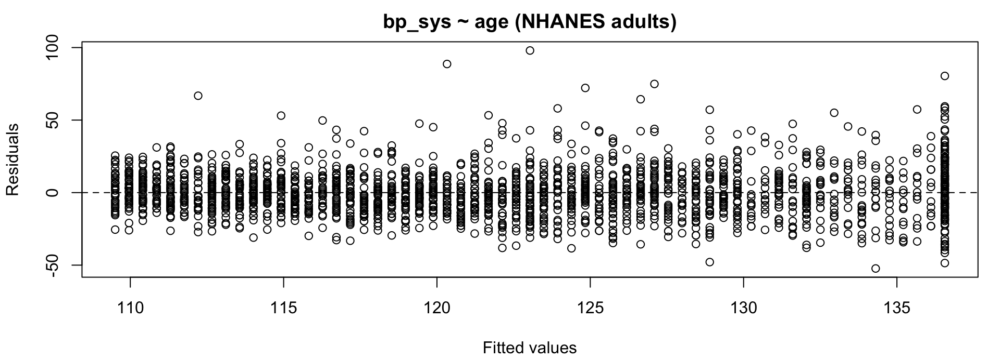
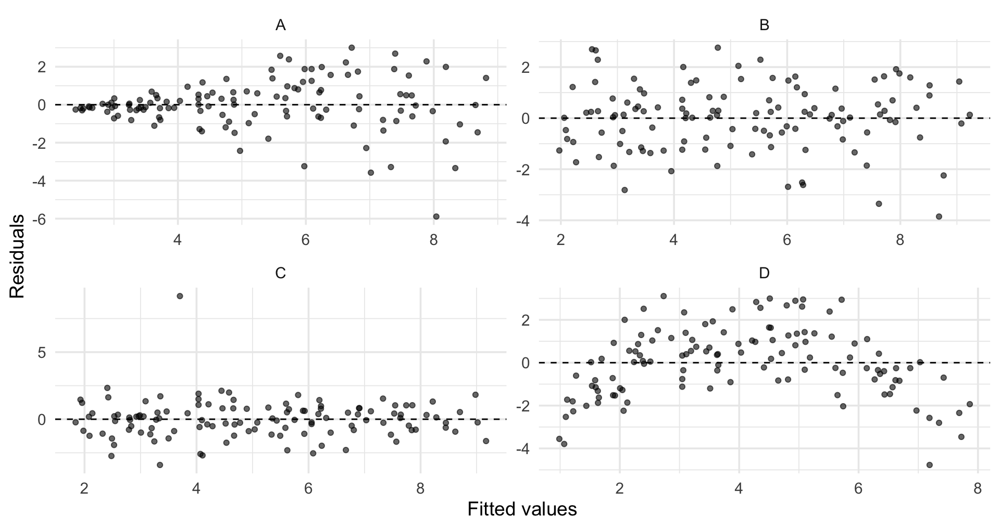
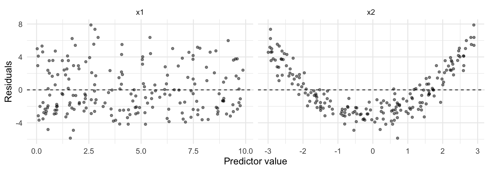

Regression I: Linear Regression with Modeling (GPH-GU 2353/3353)
2026-10-13
Your model makes assumptions; the residuals show where it breaks them.
lm() you have fit so far came with fine print you signed without readingy_i = \beta_0 + \beta_1 x_{i1} + \cdots + \beta_p x_{ip} + \varepsilon_i
| Rank | Assumption | If violated |
|---|---|---|
| 1 | Mean zero (linearity) | Estimates aim at the wrong target |
| 2 | Constant variance | Slopes fine; SEs, CIs, PIs wrong |
| 3 | Independence | SEs can be badly off |
| 4 | Normality | Matters least: PIs, small n (Week 7) |
The null plot
Train your eyes on what “nothing” looks like. Diagnosing is comparing your plot to boring.

Four simulated datasets, same straight-line model lm(y ~ x) fit to each. I know the truth because I wrote the code. Diagnose each panel.
set.seed(601)
n <- 120
x <- runif(n, 0, 10)
gallery <- bind_rows(
tibble(panel = "A", x = x, y = 2 + 0.7 * x + rnorm(n, sd = 0.25 * x)),
tibble(panel = "B", x = x, y = 2 + 0.7 * x + rnorm(n, sd = 1.2)),
tibble(panel = "C", x = x, y = 2 + 0.7 * x + c(rnorm(n - 1, sd = 1.2), 9)),
tibble(panel = "D", x = x,
y = 2 + 0.7 * x - 0.18 * (x - 5)^2 + rnorm(n, sd = 1.2))
)
gallery_resid <- gallery |>
group_by(panel) |>
mutate(fitted = fitted(lm(y ~ x)), resid = resid(lm(y ~ x))) |>
ungroup()
gallery_plot <- ggplot(gallery_resid, aes(fitted, resid)) +
geom_point(alpha = 0.6) +
geom_hline(yintercept = 0, linetype = 2) +
facet_wrap(~panel, scales = "free") +
labs(x = "Fitted values", y = "Residuals")
sd = 0.25 * x: spread grows with the fitted value. Nonconstant varianceWarning
Real plots whisper; simulations shout. The lab drills you on the same four shapes so you recognize the whisper.
| You see | It suggests | What it costs you |
|---|---|---|
| Curve or arc | Wrong mean function (nonlinearity) | Biased estimates; wrong story |
| Fan or funnel | Nonconstant variance | Wrong SEs, CIs, p-values, PIs |
| Isolated stray point | Outlier or data error | Can drag the whole fit (Week 7) |
| Boring blob | Nothing detectable | Carry on |
\hat y compresses all predictors onto one axis, which can hide which predictor is at fault. Plot residuals against each predictor too.
set.seed(602)
m <- 200
x1 <- runif(m, 0, 10)
x2 <- runif(m, -3, 3)
y <- 1 + x1 + x2^2 + rnorm(m)
fit2 <- lm(y ~ x1 + x2)
sim2 <- tibble(x1, x2, resid = resid(fit2)) |>
pivot_longer(c(x1, x2), names_to = "predictor", values_to = "value")
sim2_plot <- ggplot(sim2, aes(value, resid)) +
geom_point(alpha = 0.5) +
geom_hline(yintercept = 0, linetype = 2) +
facet_wrap(~predictor, scales = "free_x") +
labs(x = "Predictor value", y = "Residuals")
A classmate fits uninsured ~ poverty on county data and finds a clear fan: residual spread grows with fitted values.
Fan means assumption 2, not assumption 1: the slope is still an unbiased estimate of the linear association, but its SE, the CIs, and especially the prediction intervals are built on a variance that is not one number.
Open Week 6 Lab, Part A:
uninsured ~ poverty on county_health, make the diagnostic plots yourself, and write down what the residuals are telling youDeck B is about what to do with what you found.
GPH-GU 2353 · Week 6A